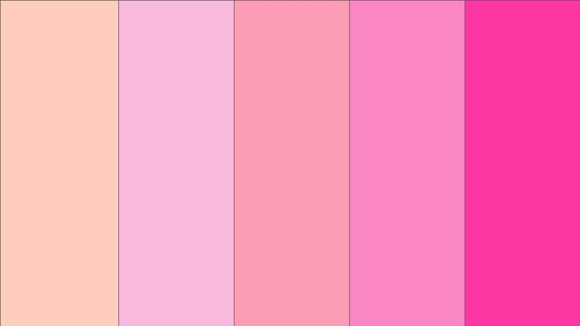
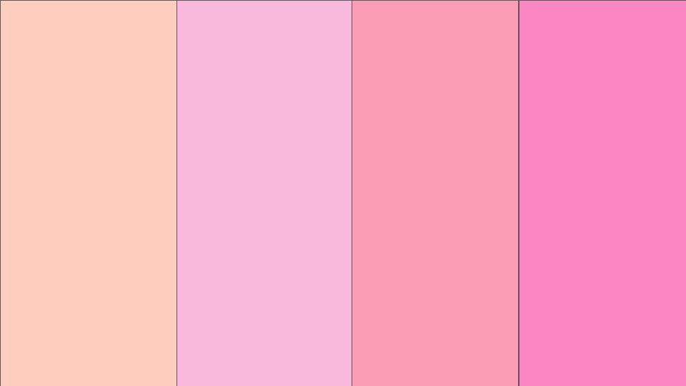
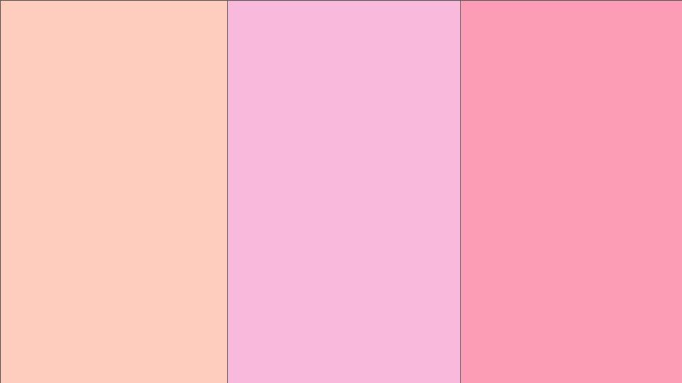
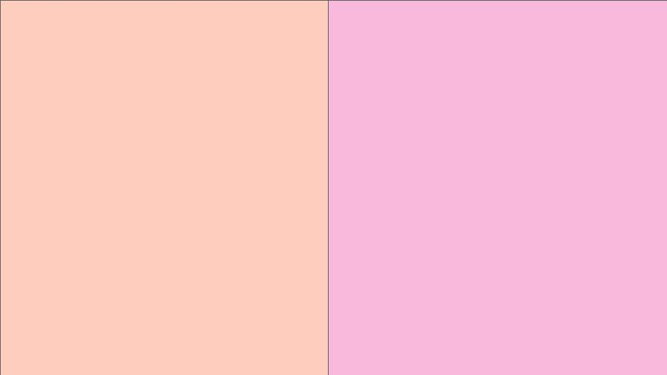

en el principio de la pagina estan los libros que he leido con lo que se trata cada uno, luego una lista de libros que quiero leer, despues lo que pensaba de cada libro osea su reseña pero si vas all principio a la parte de lo que se tratan los libros y haces click en la portada te lleva directamente a su reseña asi no tienes que hacer todo el recorrido

El día de su cumpleaños, Harry Potter descubre que es hijo de dos conocidos hechiceros, de los que ha heredado poderes mágicos. Debe asistir a una famosa escuela de magia y hechicería

Harry Potter y los estudiantes de segundo año investigan una malévola amenaza para sus compañeros de clases de Hogwarts.

El tercer año de estudios de Harry en Hogwarts se ve amenazado por la fuga de Sirius Black de la prisión de Azkaban. Al parecer, se trata de un peligroso mago que fue cómplice de Voldemort y que intentará vengarse de Harry

Evelyn Hugo, el ícono de Hollywood que se ha recluido en su edad madura, decide al fin contar la verdad sobre su vida llena de glamour y de escándalos.

Simon Kelleger fue demasiado lejos al contarle a todo el mundo, a través de una App, los secretos más íntimos de sus compañeros de clase...Ahora que Simon está muerto solo queda un gran secreto por desvelar.

Una vida que nadie recuerda. Una historia que nunca olvidarás.Tras hacer un pacto con el diablo, Addie entrega su alma a cambio de la inmortalidad

Milly, Aubrey y Jonah Story son primos, pero casi no se conocen. Su familia se rompió cuando su abuela desheredó a sus hijos. Pero, de pronto, la abuela Mildred los invita a pasar el verano en su complejo turístico y, con el paso de los días, los tres primos irán notando cosas extrañas que no acaban de encajar.

Imagina un mundo en el que una organizacion les avisa a las personas la inminencia de su muerte. Imagina que comenzó la cuenta regresiva.
Miles ve cómo su vida transcurre sin emoción alguna. Su obsesión con memorizar las últimas palabras de personajes ilustres le lleva a querer encontrar su Gran Quizá. Decide mudarse a Culver Creek, un internado fuera de lo común, donde disfrutará por primera vez de la libertad y conocerá a Alaska Young.

Macy Sorensen se está acomodando en una ambiciosa aunque emocionalmente tibia rutina: trabajando duro como nueva residente de pediatría, planea su boda con un hombre mayor y económicamente seguro. Pero cuando se encuentra con Elliot Petropoulos, el primer y único amor de su vida, la burbuja cuidadosa que ha construido comienza a disolverse.

La selección de Kiera Cass trata sobre 35 chicas que tienen la oportunidad de escapar del régimen en el que vivían para intentar conquistar el corazón del príncipe y tener la oportunidad de vivir en el castillo. Sin embargo, America Singer está allí por sus padres pero en realidad no desea ser elegida ya que ella está enamorada de otra persona.

De las treinta y cinco chicas llegaron a palacio para competir en la Selección. Todas menos seis han sido devueltas a sus hogares. Y solo una conseguirá casarse con el príncipe Maxon y ser coronada princesa de Illea.

La situación en Palacio es cada vez más peligrosa. Los rebeldes atacan y America, las chicas que siguen en la selección y Maxon se encuentran en verdadero peligro.

La Selección historias extra nunca antes vistas. Las cuatro novelas de The Selection, dolorosamente románticas y elegantes, The Prince, The Guard, The Queen y The Favourite juntas en un solo volumen.

Dante sabe nadar. Aristóteles, no. Dante es hablador y seguro de sí mismo. Ari duda todo el tiempo y le cuesta entablar una conversación con alguien .Y aunque a simple vista no tienen nada en común, se encuentran, y empiezan a pasar tiempo juntos.

Ox era solo un niño cuando su padre le enseñó que nunca sería nadie. Hasta que un día Joe se cruzó en su camino, y no solo lo aceptó como a uno más de la familia, sino que también le confesó su mayor secreto, el cual cambiaría la vida de Ox para siempre.

En esta cuarta entrega de la serie, seguiremos a la familia real de Illéa en una nueva selección. Descubre lo que sucede después de lo que parecía el final feliz de la historia. Veinte años atrás, America Singer concursó en La Selección y conquistó el corazón del Príncipe Maxon.

Cuando Eadlyn se convirtió en la primera princesa de Illea, jamás pensó que se iba a enfrentar a La Selección, un programa televisado que hace años finalizó. Sus padres, Maxon y América, se conocieron allí y siempre ha visto eso como una bonita historia de amor.

Un chico, supuestamente desaparecido, resurge en un bosque mágico… y se enamora de la bruja que está decidida a desentrañar sus secretos.

Su madre desaparece y deja un extraño mensaje: no te acerques al bosque de los avellanos. Para recuperarla, Alice tendrá que adentrarse en el mundo en que nacieron las historias de su abuela y donde quizás encuentre la razón del monstruoso y estremecedor origen de su historia.

Charlie es un joven socialmente torpe y siempre está viendo la vida desde la barrera, hasta que Sam y su hermanastro Patrick ayudan a Charlie a descubrir las alegrías de la amistad, el primer amor, la música y mucho más, mientras que un maestro provoca que él sueñe con ser un escritor.

Cuando una relación falsa entre científicos se encuentra con la irresistible fuerza de atracción, arroja al caos las teorías cuidadosamente calculadas de una mujer sobre el amor. Como doctorado de tercer año. La candidata, Olive Smith no cree en las relaciones románticas duraderas, pero su mejor amiga sí, y eso es lo que la metió en esta situación.

Esta historia de amor entre dos chicos, uno de ellos declaradamente homosexual y el otro en vías de autodescubrimiento, nos recordará que hay primeros amores frágiles como el cristal y memorables como el diamante.

Lucy pretende ascender en el trabajo sin, por ello, vulnerar la ética que profesa. Sin embargo, se enfrenta profesionalmente a Joshua, un rival frío que carece de sus escrúpulos, pero del que, al mismo tiempo, está enamorada.

Por eso, su idílica relación con un magnífico neurocirujano llamado Ryle Kincaid, parece demasiado buena para ser verdad. Cuando Atlas, su primer amor, reaparece repentinamente y Ryle comienza a mostrar su verdadera cara, todo lo que Lily ha construido con él se ve amenazado.

Hace cinco años, la estudiante Andie Bell fue asesinada por Sal Singh. La policía sabe que fue él. Sus compañeros también. Todo el mundo lo sabe. Pero Pippa ha crecido en la misma ciudad y no lo tiene tan claro… Decidida a desenterrar la verdad, Pippa convierte este asesinato en el tema de su proyecto de final de curso.
| Libro | Portada | Genero |
|---|---|---|
| La cancion de aquiles |  |
Ficcion Historica |
| Todas mis heridas |  |
Novela |
| All the bright places |  |
Romance/Drama |
| Orgullo y prejuicio |  |
Romance |
| El retrato de Dorian Gray |  |
Ficcion Historica |
| Mujercitas |  |
Novela |
| Carrie |  |
Terror |
| Normal people |  |
Romance |
| Eramos Mentirosos |  |
Thriller psicológico |
| Milk and Honey |  |
Poesia |
| La sociedad de los poetas muertos |  |
Ficcion |
| If we were villains |  |
Thriller |
| El principe cruel |  |
Literatura fantástica |
| The secret history |  |
Novela psicológica |
| A little life |  |
Novela |
| Her name in the sky |  |
Ficcion |
| Rojo, blanco y sangre azul |  |
Romance |
| She Gets the Girl |  |
Romance |
| I Kissed Shara Wheeler |  |
Ficcion |
Aqui iran las reseñas de todos los libros que he leido y los voy a clasificar con un sitemas de colores, del rosado mas claro que seria una estrella hasta el mas oscuro que son 5 
Pues el libro realmente me gusta menos que la película en cambio con otros libros de la misma saga que me han gustado más los libros pero para ser la introducción a la saga era muy bueno, puedes entender el mundo y puedes adentrarte en él. Para mi este libro es muy bueno, magico y te transmite confort, aunque no es uno de mis favoritos de la saga lo pongo en el rosa chicle

La verdad esperaba más pero me lo esperaba mucho más llevadero, la película en si no me gusta pero el libro me costó un montón leerlo, la historia no es predecible y se que esto puede sonar polémico pero me pareció medio aburrido. No es de mis favoritos pero por el amor que le tengo a esta saga lo pongo en rosa

No tengo palabras para lo mucho que amo este libro y la pelicula tambien la amo es definitivamente mi favorita pero el libro es otra cosa, te hablan mas del pasado de los padres de harry y lo ame. Sin mucho para decir solo que ME ENCANTA lo pongo en rosa fuerte
Ame este libro, la representación me pareció lo bastante aceptable para sobrellevarla, el libro no es nada predecible y me hizo llorar, reír y enojarme en algunas partes. El plot twist lo amo pero hay algunas cositas en este libro que no me gustan para nada aun así lo puse en rosa fuerte porque en su momento lo adoré. ALERTA SPOILER!!!! podemos hablar de lo bifobica que era celia, la amo pero por dios mujer acepta que a Evelyn también le gustan los hombres.
Pues de este libro no tengo casi nada que decir en parte porque no lo amo y en parte porque no recuerdo casi nada de él, pero lo que recuerdo es que es bastante atrapante, lo tomas y sigues leyendo y leyendo y no lo puedes dejar. Solo quiero decir que amo el pequeño plot de romance de este libro y el arco de personaje de Addy que en sí ya es uno de los mejores personajes de todo el libro. No he tenido la oportunidad de ver la serie pero por lo que oí era un poco mala así que por eso tampoco la he visto pero ahora si digo la calificación y a este libro lo pongo en rosa
Quiero decir que si tuviera la misma oportunidad que Addie la tomaría sin pensarlo dos veces, adiós a todos los que me conocían pero me voy a viajar por el mundo por siempre. Amo este libro, al principio se me hizo un poco pesado de leer pero ya que te adentras en la trama es lo mejor que he leído y le he agarrado mucho cariño a Addie y Henry por individual pero también a su pareja. Este libro tiene una muy buena trama y lo calificó con rosa fuerte.
El libro es atrapante de hecho tanto que lo lei en 2 dias o menos y tiene casi 400 paginas, al final no me termino gustando tanto como esperaba pero no lo odie. El plot twist es increíble y no lo veía venir por nada del mundo, en mi goodreads me acuerdo que le puse 4 estrellas pero no creo que me siga gustando tanto como antes así que lo pongo en rosa.
Ok se que este libro tiene tantas opiniones diferentes al respecto más que todo malas pero yo lo ame, fue uno de los libros que hizo que empezara a leer más y le tengo mucho cariño a él y a sus personajes. Me acuerdo que pensé que nadie iba a morir a pesar del título del libro, realmente deseaba que tuvieran un final feliz pero puedo decir que soy la más fan y adoro su relación con toda mi alma. A este libro lo calificó como rosa chicle, no puedo esperar a leer la precuela.
It's me, Hi! I'm the problem, it's me. Voy a parecer el pequeño estereotipo de adolescente que ama a John Green pero no, solo he leído este libro suyo pero lo amo tanto, definitivamente de mis libros favoritos. Tengo tanto que decir sobre este libro y el hecho de que lo haya leído como 5 veces no ayuda pero amo a Alaska Young y odio a Miles, tipo señor quien se creía. Todo lo que tengo que decir sobre este libro no entaria aqui asi que solo digo mi calificacion y es rosa fuerte.
Como la hopeless romantic que soy no puedo evitar poner a este libro en rosa fuerte, solo quiero decir que ya van a empezar a ver un patrón que tengo con los libros de romance. Amo a Macy y a Elliot y amo la dinámica de su relación. Más que todo este libro es un libro confort, sin una trama tan complicada y para leerlo en otoño con una taza de té.
Amo esta saga, la leí el verano pasado y recuerdo leer cada libro en un día, América es una protagonista excelente y las otras chicas de la selección también aunque en este libro no las desarrollan tanto. Lo pongo en rosa.
Las seis de la elite son mi adoración y solamente amo el concepto de estos libros y el mundo en que se desarrolla y acabo de ver una reseña en goodreads que es la definicion perfecta para esta saga "Esta saga es como comida chatarra, se que no es buena para mi y ni siquiera estoy segura de que la esté disfrutando pero no puedo parar" lo pongo a este tambien en rosa.
Este es el final de los libros de Maxon y America y amo el final porque es muy tierno y podemos imaginar con quien se quedo América pero tenían que matar a tantos personajes? La respuesta es NO, porque matan al mejor personaje con el mejor arco de la vida, no se lo perdono a la autora por nada del mundo. Este libro también va a estar en rosa.
Solo son historias de los otros personajes, no cuesta tanto tiempo leerlo y me gusto saber más de los otros personajes. Había dicho que no podía calificar a un libro con menos de tres estrellas pero este va en rosa dos.

Este libro es hermoso, en realidad no tiene una trama, una historia central o un evento en que los personajes se centren. Es sobre un ari, un chico. Un chico que está triste y enojado sin saber el por qué. Es sobre él tratando de amarse a sí mismo y a los demás. Amo este libro por lo que sientes cuando lo lees, la experiencia de relacionarse con los personajes, de leerlo siendo un adolescente y sentirte comprendido, la escritura del libro también es muy hermosa y las frases, DIOS. "Y me pareció que el rostro de Dante era un mapa del mundo. Un mundo sin oscuridad. Guau, un mundo sin oscuridad.¿Que podria haber mas bello?" Solo dejo esto por aquí y digo que este libro es rosa fuerte.
Definitivamente busquen los trigger warnings antes de leer este libro, a mi me lo recomendo una de mis mejores amigas porque es su favorito y lo ame. Aunque es bastante largo, como 700 páginas, recomiendo que lo lean y se tomen su tiempo para apreciar a cada personaje, su desarrollo y la historia de amor. La historia de amor es maravillosa, es slow burn pero puedo decir amo ese trope así que no fue un problema para mi. Este libro lo pongo en rosa chicle pero si pudiera lo pusiera en rosa chicle y medio.
Se acuerdan como los otros libros de la selección eran entretenidos y como la comida chatarra (entenderán esta referencia si leyeron alguna de mis otras reseñas de la saga) bueno este libro no es para nada así, amé el concepto de una selección de chicos en lugar de chicas pero no lo logro para mi. La historia de amor es medio rara pero amo ver la vida que tuvieron America y Maxon luego de la selección así que lo pongo en rosa.
¿Qué es esto? Este libro es aún peor que el anterior y ya no lo puede salvar ni América ni Maxon, la historia de amor no la entendí nada, si al menos la hubieran desarrollado más tal vez me gustara pero todo fue muy rápido y sin sentido. Este libro lo pongo en rosa dos. SPOILER!!!! no entiendo el repetir el problema de las castas, tipo ya las quitaron que era lo que querían en los libros anteriores por que la gente sigue quejandose.
Lo mucho que amo este libro es increíble, tiene magia, misterio, romance y tiene B R U J A S no saben lo mucho que amo a las brujas. Y la manera en que está escrito es muy buena, parte de la historia y luego partes de un libro de brujas es muy perfecto y a todo sumandole el final es un libro rosa fuerte, de hecho se lo regale a mi mejor amiga porque ella ama las cosas de brujas.
Este libro fue entretenido de leer pero no saben lo decepcionada que estaba cuando llegue al final, la peor decepción y se que hay un libro con la continuación pero con lo que me decepcione con este ni lo voy a leer. Este libro es rosa dos.
Definitivamente sabía que me iba a gustar ya que la película es mi favorita de todos los tiempos y la he visto millones de veces pero el libro es otra experiencia, el formato de cartas en que está escrito es increíble y la revelación que aquí es mucho mejor porque en la película solo la dejan implícita. Amo todo excepto la escena de verdad o reto que es intolerable, no la puedo ni ver ni leer y la historia de Greg y Sam en el libro es mucho más completa y compleja al igual que la relación de Charlie y su profesor. Un libro rosa fuerte 100%
Este libro es muy cute y yo que tengo una debilidad por los romances me hace amarlo, el trope fake dating es muy bueno y la relación es muy tierna, adam siendo "odio a todos menos a ti" y el sunshine, grumpy. El desarrollo de su relación y la revelación del final aunque ya la veías venir te da mucha ternura y además chequen los trigger warnings. Todo en este libro me da rosa chicle
Un clásico, más que ser un libro es una novela gráfica o un comic pero me encanta aunque solo he tenido la oportunidad de leer el primer volumen me parece que es muy buena serie de libros sumandole el romance de Nick y Charlie que es perfecto, literalmente mi relación deseada lo juro si no tengo algo como Nick y Charlie no quiero nada, sumandole todo la representación que tienen todos los libros de la autora (lesbianas, bisexuales, gays, trans y salud mental de adolescentes) y la experiencia de ver la serie por primera vez no se compara con nada. Lo mucho que puedes llegar a relacionarte con nick y lo relatable que es el descubrimiento de su sexualidad en sí podría decir que me relaciono más con Tara pero en esos aspectos soy Nick por eso a este libro le doy rosa fuerte.
Primero que nada diré que vi primero la película y como me gusto me decidí a leer el libro y por eso el libro me encanto, soy una débil con respecto a los romances pero josh le dice fresita a lucy FRESITA quien no puede amar eso y a decir verdad su relación en el libro es mucho más linda y completa que en la película ya que en esta todo pasa muy rápido pero a este libro lo pongo en rosa chicle.
Ya se que muchos dirán que este libro merece más que tres estrellas pero diré porque no le puse mas como muchos han hecho, si la relación de Atlas y Lily es linda y acepto que el libro es atrapante pero la decisión del final de Lily no me gusto para nada yo solo me pregunto ¿ella no pensó en su hija? y en qué le pasaría si Ryan un día se despierta pierde los estribos y la golpea, ya se que esta es la historia de la autora y a ella no le paso eso pero no todos tienen la misma suerte solo esa decisión hizo que este libro me disgustara. Si, la relación de Atlas y Lily es linda lo repito pero ESTE NO ES LIBRO DE ROMANCE, definitivamente lean los trigger warnings antes de pensar en leerlo por eso a este libro lo pongo en rosa.
Este libro ha hecho que quiera leer 50 libros con el trope de teens detectives, LO BUENO QUE ES ESTE LIBRO por dios tiene de todo, la mejor protagonista del mundo y su noviecito todo tierno ayudándole a resolver un misterio ¿qué más podemos pedir? La trama es muy buena y me acuerdo de pasarmela todo el libro cambiando de sospechosos, el plot twist muy bueno y las pequeñas pizcas de romance en el camino hace que sea mucho mejor, solo digo que amo a Pip y que este libro va en rosa fuerte.